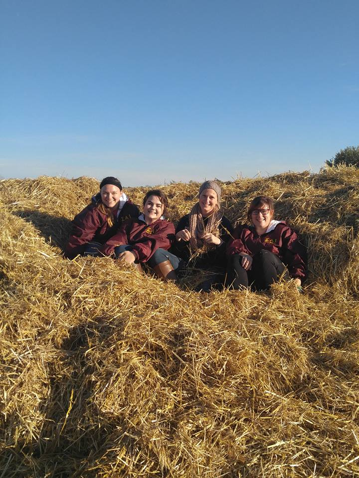

Sisterhood
Spending time with sisters is the best way to both connect with the chapter and relieve stress from school, in my opinion.
Members are required to attend two sisterhood events per semester, but we have plenty to choose from, such as our pumpkin patch event,
our Mi Casa dinner, and our presentation night.
